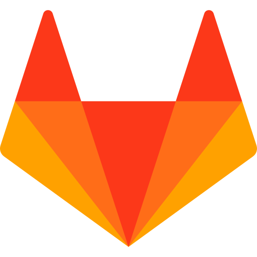
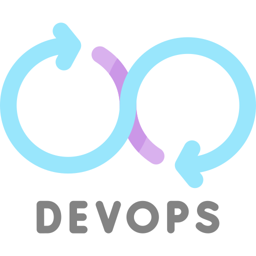
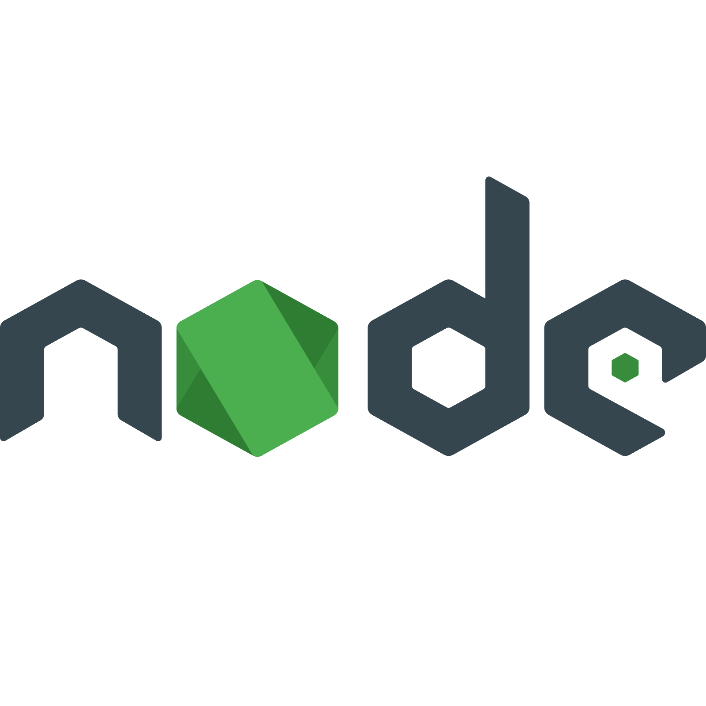
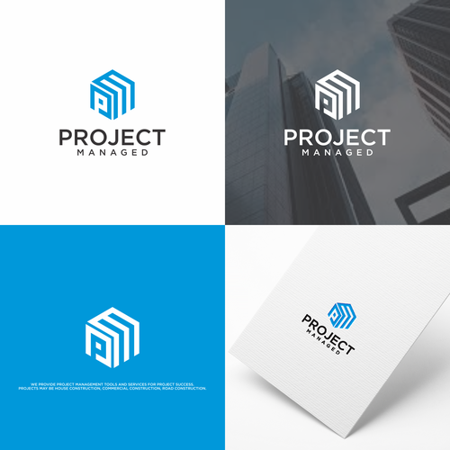

I am Sanjay Chauhan, a dedicated and results-driven Full-Stack Web
Developer
with a strong foundation
in both front-end and back-end technologies. I specialize in designing and developing modern,
responsive web applications that are not only visually engaging but also functionally
robust.
My core skill set includes HTML, CSS, JavaScript, PHP, MySQL, and basic proficiency in
Java. Over
the course of my learning journey, I have successfully built and deployed multiple projects such
as
a child adoption management system, an aptitude testing platform, and a music streaming
interface inspired by Spotify . These projects reflect my ability to
combine aesthetic design principles with technical functionality.
I am highly passionate about leveraging technology to solve real-world problems, with a strong
emphasis on code quality, performance optimization, and user experience. I am also committed to
continuous learning and staying updated with the latest advancements in web development.



During Trainee Developer at NITSAN Technologies, I gained hands-on experience in real-world project development and learned how to effectively collaborate within a professional team environment.
I worked on a complete project from scratch using HTML, CSS, and JavaScript, implementing responsive UI and optimizing page performance with techniques like lazy loading for faster site loading times.
This experience strengthened my understanding of company workflows, version control practices (GitHub/GitLab), and end-to-end delivery of production-ready web applications.
This experience enhanced my real-world understanding of full-stack development, secure coding, and user-focused design.
I completed a 15-day internship at Sidhwani Technologies, Bhavnagar as a Full-Stack Web Developer. During this internship, I developed a full-stack Child Adoption Management System featuring:
This experience enhanced my real-world understanding of full-stack development, secure coding, and user-focused design.

BrainCraft is an interactive web platform designed to enhance cognitive skills...
BrainCraft is an interactive web application designed to improve logical thinking and problem-solving abilities. It features a clean, modern UI and is optimized for students preparing for competitive exams.
ReadMate is a simple and intuitive platform for book lovers to share and explore digital reading material. Users can upload, preview, and download books or notes, making it ideal for student communities.
A front-end music streaming interface inspired by Spotify. It replicates essential features and layout for a visually rich and interactive experience.
Feel free to reach out to me with any questions or inquiries. I'm always happy to help!